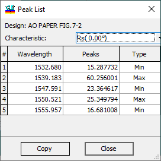
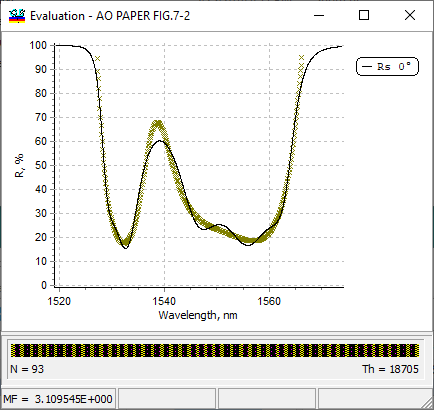

Peak List
Peak List
Navigation: OptiLayer Menu Commands > Analysis Menu > Evaluation >
Peak List
` <idh_evaluation.html>`__ ` <idh_evaluation.html>`__ ` <filter_mode.html>`__
Peak lists of the theoretical spectral characteristics can be obtained through the right-click menu of the relevant Evaluation windows.

The obtained list can be copied to the clipboard using the Copy command. We used the Example LEC04D4 to generate this peak list.
